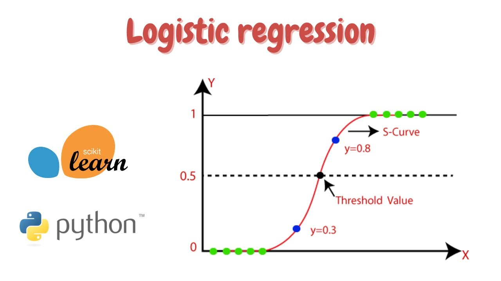
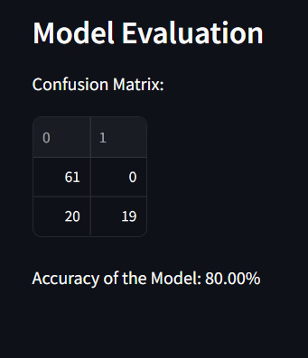
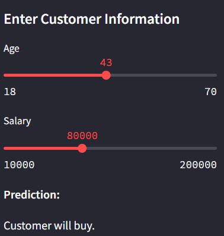

Sale Prediction from Existing Customer - Logistic Regression’s documentation!¶
Project Overview¶
This project implements a web application for predicting whether a customer will buy a product based on their age and salary. It utilizes logistic regression, a machine learning algorithm, to make predictions.
Logistic Regression Code¶
import streamlit as st
import pandas as pd
import numpy as np
from sklearn.model_selection import train_test_split
from sklearn.linear_model import LogisticRegression
from sklearn.preprocessing import StandardScaler
from sklearn.metrics import confusion_matrix, accuracy_score
# Load the dataset
@st.cache_data
def load_data():
return pd.read_csv('C:/Users/USER/Documents/My GitHub Folder/Machine Learning/Machine-Learning-Projects/1. Supervised Learning/1. Logistic Regression/Dataset.csv')
# Function to preprocess data and train model
def preprocess_and_train(df):
X = df.iloc[:, :-1].values
Y = df.iloc[:, -1].values
X_train, X_test, y_train, y_test = train_test_split(X, Y, test_size=0.25, random_state=0)
sc = StandardScaler()
X_train = sc.fit_transform(X_train)
X_test = sc.transform(X_test)
model = LogisticRegression(random_state=0)
model.fit(X_train, y_train)
return model, X_test, y_test, sc
# Function to predict based on user input
def predict(model, sc, age, salary):
new_customer = [[age, salary]]
prediction = model.predict(sc.transform(new_customer))
if prediction == 1:
return "Customer will buy."
else:
return "Customer won't buy."
# Main function
def main():
st.title('Sale Prediction from Existing Customer - Logistic Regression')
# Load data
df = load_data()
# Preprocess data and train model
model, X_test, y_test, sc = preprocess_and_train(df)
# Sidebar for user input
st.sidebar.header('Enter Customer Information')
age = st.sidebar.slider('Age', min_value=18, max_value=70, value=30, step=1)
salary = st.sidebar.slider('Salary', min_value=10000, max_value=200000, value=50000, step=1000)
# Predict based on user input
prediction = predict(model, sc, age, salary)
st.sidebar.markdown('**Prediction:**')
st.sidebar.write(prediction)
# Show dataset summary
st.subheader('Dataset Summary')
st.write(df.describe())
# Show confusion matrix and accuracy
st.subheader('Model Evaluation')
y_pred = model.predict(X_test)
conf_matrix = confusion_matrix(y_test, y_pred)
accuracy = accuracy_score(y_test, y_pred)
st.write('Confusion Matrix:')
st.write(conf_matrix)
st.write('Accuracy of the Model: {:.2f}%'.format(accuracy * 100))
if __name__ == '__main__':
main()
Results¶
# Test the Model
